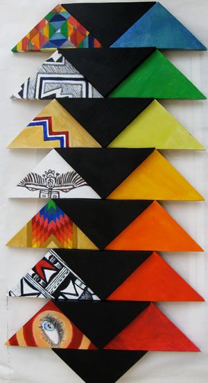

Work Experience
- Digi-Block, Math Teacher. Cambridge, MA. 2012 - present.
- Target, Cashier. Roseville, MN. May - August 2012
- Nanny. Maple Grove, MN. 2011-2012.
- Minnesota Children's Museum, team leader. St. Paul, MN. 2010-2011.
Relevant Coursework
Computer Science and Web:
- Data Structures. Tufts University. Spring 2013.
- Web Programming. Tufts University. Spring 2013.
- Intro to Computer Science. Tufts University. Fall 2012.
- Intro to Web Design. SMFA. Fall 2012.
Marketing:
- PR and Marketing. Tufts University. Fall 2012.
- Entrepreneurship and Leadership. Tufts University. Fall 2012
Film:
- Teaching Assistant, Making Movies. Tufts University. Spring 2013.
- Advanced Filmmaking. Tufts University. Fall 2012 - present.
- Making Movies. Tufts University. Spring 2012.
Art & Design:
- Studio 12. The Blake School. 2010-2011.
- Advanced Photography. The Meadows School. Spring 2008.
- Architecture. The Meadows School. 2008-2009.
